Scenes#
- sionna.rt.load_scene(filename: str | None = None, merge_shapes: bool = True, merge_shapes_exclude_regex: str | None = None, remove_duplicate_vertices: bool = False) sionna.rt.scene.Scene[source]#
Loads a scene from file
- Parameters:
filename (str | None) – Name of a valid scene file. Sionna uses the simple XML-based format from Mitsuba 3. For None, an empty scene is created.
merge_shapes (bool) – If set to True, shapes that share the same radio material are merged.
merge_shapes_exclude_regex (str | None) – Optional regex to exclude shapes from merging. Only used if
merge_shapesis set to True.remove_duplicate_vertices (bool) – If set to True, duplicate vertices are removed from the scene objects.
- sionna.rt.load_scene_from_string(xml_string: str, merge_shapes: bool = True, merge_shapes_exclude_regex: str | None = None, remove_duplicate_vertices: bool = False) sionna.rt.scene.Scene[source]#
Loads a scene from an XML string.
- Parameters:
xml_string (str) – XML string containing the scene.
merge_shapes (bool) – If set to True, shapes that share the same radio material are merged.
merge_shapes_exclude_regex (str | None) – Optional regex to exclude shapes from merging. Only used if
merge_shapesis set to True.remove_duplicate_vertices (bool) – If set to True, duplicate vertices are removed from the scene objects.
- class sionna.rt.Scene(mi_scene: mitsuba.Scene | None = None, remove_duplicate_vertices: bool = False)[source]#
A scene contains everything that is needed for radio propagation simulation and rendering.
A scene is a collection of multiple instances of
SceneObjectwhich define the geometry and materials of the objects in the scene. It also includes transmitters (Transmitter) and receivers (Receiver).A scene is instantiated by calling
load_scene().Example scenes can be loaded as follows:
import sionna from sionna.rt import load_scene scene = load_scene(sionna.rt.scene.munich) scene.preview()
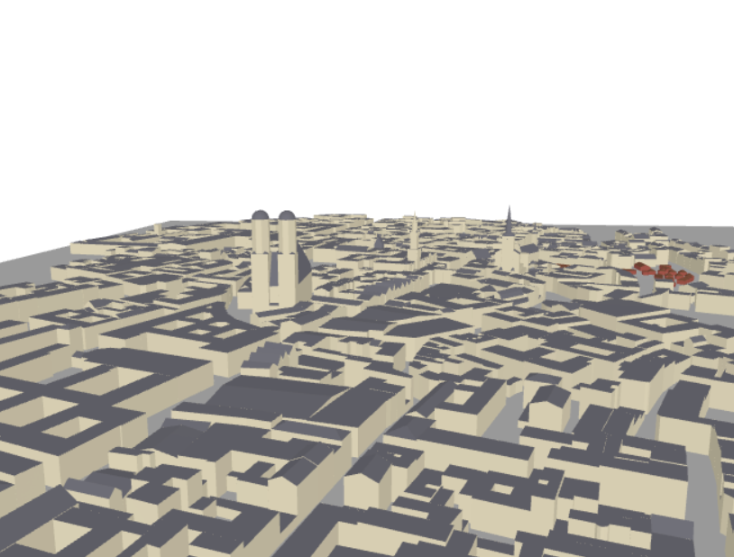
Methods
- add(item: sionna.rt.radio_devices.radio_device.RadioDevice | sionna.rt.radio_materials.radio_material_base.RadioMaterialBase) None[source]#
Adds a radio device or radio material to the scene
If a different item with the same name as
itemis part of the scene, an error is raised.- Parameters:
item (sionna.rt.radio_devices.radio_device.RadioDevice | sionna.rt.radio_materials.radio_material_base.RadioMaterialBase) – Item to be added to the scene
- all_set(radio_map: bool) None[source]#
Raises an exception if the scene is not all set for simulations
- Parameters:
radio_map (bool) – Set to True if checking for radio map computation. Set to False otherwise.
- edit(add: sionna.rt.scene_object.SceneObject | list[sionna.rt.scene_object.SceneObject] | dict | None = None, remove: str | sionna.rt.scene_object.SceneObject | list[sionna.rt.scene_object.SceneObject | str] | None = None) None[source]#
Add and/or remove a list of objects to/from the scene
To optimize performance and reduce processing time, it is recommended to use a single call to this function with a list of objects to add and/or remove, rather than making multiple individual calls to edit scene objects.
- Parameters:
add (sionna.rt.scene_object.SceneObject | list[sionna.rt.scene_object.SceneObject] | dict | None) – Object, list of objects, or Mitsuba shape dictionary (accepted by
mitsuba.load_dict) to be addedremove (str | sionna.rt.scene_object.SceneObject | list[sionna.rt.scene_object.SceneObject | str] | None) – Name or object, or list/dictionary of objects or names to be added
- get(name: str) None | sionna.rt.scene_object.SceneObject | sionna.rt.radio_devices.radio_device.RadioDevice | sionna.rt.radio_materials.radio_material_base.RadioMaterialBase[source]#
Returns a scene object, radio device, or radio material
- Parameters:
name (str) – Name of the item to retrieve
- preview(*, background: str = 'white', clip_at: float | None = None, clip_plane_orientation: tuple[float, float, float] = (0, 0, -1), fov: float = 45.0, paths: sionna.rt.path_solvers.paths.Paths | None = None, radio_map: sionna.rt.radio_map_solvers.planar_radio_map.PlanarRadioMap | sionna.rt.radio_map_solvers.mesh_radio_map.MeshRadioMap | None = None, resolution: tuple[int, int] = (655, 500), rm_db_scale: bool = True, rm_metric: str = 'path_gain', rm_tx: int | str | None = None, rm_vmax: float | None = None, rm_vmin: float | None = None, rm_cmap: Callable | str | None = None, show_devices: bool = True, show_orientations: bool = False, point_picker: bool = True) None[source]#
In an interactive notebook environment, opens an interactive 3D viewer of the scene.
Default color coding:
Green: Receiver
Blue: Transmitter
Controls:
Mouse left: Rotate
Scroll wheel: Zoom
Mouse right: Move
- Parameters:
background (str) – Background color in hex format prefixed by “#”
clip_at (float | None) – If not None, the scene preview will be clipped (cut) by a plane with normal orientation
clip_plane_orientationand offsetclip_at. That means that everything behind the plane becomes invisible. This allows visualizing the interior of meshes, such as buildings.clip_plane_orientation (tuple[float, float, float]) – Normal vector of the clipping plane
fov (float) – Field of view [deg]
paths (sionna.rt.path_solvers.paths.Paths | None) – Optional propagation paths to be shown
radio_map (sionna.rt.radio_map_solvers.planar_radio_map.PlanarRadioMap | sionna.rt.radio_map_solvers.mesh_radio_map.MeshRadioMap | None) – Optional radio map to be shown
rm_db_scale (bool) – Use logarithmic scale for radio map visualization, i.e. the radio map values are mapped to: \(y = 10 \cdot \log_{10}(x)\).
rm_metric (str) – Metric of the radio map to be displayed. One of
"path_gain","rss", or"sinr".rm_tx (int | str | None) – When
radio_mapis specified, controls for which of the transmitters the radio map is shown. Either the transmitter’s name or index can be given. If None, the maximum metric over all transmitters is shown.rm_vmax (float | None) – For radio map visualization, defines the maximum value that the colormap covers. It should be provided in dB if
rm_db_scaleis set to True, or in linear scale otherwise.rm_vmin (float | None) – For radio map visualization, defines the minimum value that the colormap covers. It should be provided in dB if
rm_db_scaleis set to True, or in linear scale otherwise.rm_cmap (Callable | str | None) – For coverage map visualization, defines the colormap to use. If set to None, then the default colormap is used. If a string is given, it is interpreted as a Matplotlib colormap name. If a callable is given, it is used as a custom colormap function with the same interface as a Matplotlib colormap. Defaults to None.
show_devices (bool) – Show radio devices
show_orientations (bool) – Show orientation of radio devices
point_picker (bool) – Enable picking a point in the scene with alt + click in order to display its coordinates.
- remove(name: str) None[source]#
Removes a radio device or radio material from the scene
In the case of a radio material, it must not be used by any object of the scene.
- Parameters:
name (str) – Name of the item to be removed
- render(*, camera: sionna.rt.camera.Camera | str, clip_at: float | None = None, clip_plane_orientation: tuple[float, float, float] = (0, 0, -1), envmap: str | None = None, fov: float | None = None, lighting_scale: float = 1.0, num_samples: int = 128, paths: sionna.rt.path_solvers.paths.Paths | None = None, radio_map: sionna.rt.radio_map_solvers.radio_map.RadioMap | None = None, resolution: tuple[int, int] = (655, 500), return_bitmap: bool = False, rm_db_scale: bool = True, rm_metric: str = 'path_gain', rm_show_color_bar: bool = False, rm_tx: int | str | None = None, rm_vmax: float | None = None, rm_vmin: float | None = None, rm_cmap: Callable | str | None = None, show_devices: bool = True, show_orientations: bool = False) matplotlib.figure.Figure | mitsuba.Bitmap[source]#
Renders the scene from the viewpoint of a camera or the interactive viewer
- Parameters:
camera (sionna.rt.camera.Camera | str) – Camera to be used for rendering the scene. If an interactive viewer was opened with
preview(), “preview” can be to used to render the scene from its viewpoint.clip_at (float | None) – If not None, the scene preview will be clipped (cut) by a plane with normal orientation
clip_plane_orientationand offsetclip_at. That means that everything behind the plane becomes invisible. This allows visualizing the interior of meshes, such as buildings.clip_plane_orientation (tuple[float, float, float]) – Normal vector of the clipping plane
envmap (str | None) – Path to an environment map image file (e.g. in EXR format) to use for scene lighting
fov (float | None) – Field of view [deg]. If None, the field of view will default to 45 degrees, unless camera is set to “preview”, in which case the field of view of the preview camera is used.
lighting_scale (float) – Scale to apply to the lighting in the scene (e.g., from a constant uniform emitter or a given environment map)
num_samples (int) – Number of rays thrown per pixel
paths (sionna.rt.path_solvers.paths.Paths | None) – Optional propagation paths to be shown
radio_map (sionna.rt.radio_map_solvers.radio_map.RadioMap | None) – Optional radio map to be shown
return_bitmap (bool) – If True, directly return the rendered image
rm_db_scale (bool) – Use logarithmic scale for radio map visualization, i.e. the radio map values are mapped to: \(y = 10 \cdot \log_{10}(x)\).
rm_metric (str) – Metric of the radio map to be displayed. One of
"path_gain","rss", or"sinr".rm_show_color_bar (bool) – Show color bar
rm_tx (int | str | None) – When
radio_mapis specified, controls for which of the transmitters the radio map is shown. Either the transmitter’s name or index can be given. If None, the maximum metric over all transmitters is shown.rm_vmax (float | None) – For radio map visualization, defines the maximum value that the colormap covers. It should be provided in dB if
rm_db_scaleis set to True, or in linear scale otherwise.rm_vmin (float | None) – For radio map visualization, defines the minimum value that the colormap covers. It should be provided in dB if
rm_db_scaleis set to True, or in linear scale otherwise.rm_cmap (Callable | str | None) – For coverage map visualization, defines the colormap to use. If set to None, then the default colormap is used. If a string is given, it is interpreted as a Matplotlib colormap name. If a callable is given, it is used as a custom colormap function with the same interface as a Matplotlib colormap. Defaults to None.
show_devices (bool) – Show radio devices
show_orientations (bool) – Show orientation of radio devices
- render_to_file(*, camera: sionna.rt.camera.Camera | str, filename: str, clip_at: float | None = None, clip_plane_orientation: tuple[float, float, float] = (0, 0, -1), envmap: str | None = None, fov: float | None = None, lighting_scale: float = 1.0, num_samples: int = 512, paths: sionna.rt.path_solvers.paths.Paths | None = None, radio_map: sionna.rt.radio_map_solvers.radio_map.RadioMap | None = None, resolution: tuple[int, int] = (655, 500), rm_db_scale: bool = True, rm_metric: str = 'path_gain', rm_tx: int | str | None = None, rm_vmin: float | None = None, rm_vmax: float | None = None, rm_cmap: Callable | str | None = None, show_devices: bool = True, show_orientations: bool = True) mitsuba.Bitmap[source]#
Renders the scene from the viewpoint of a camera or the interactive viewer, and saves the resulting image
- Parameters:
camera (sionna.rt.camera.Camera | str) – Camera to be used for rendering the scene. If an interactive viewer was opened with
preview(), “preview” can be to used to render the scene from its viewpoint.filename (str) – Filename for saving the rendered image, e.g., “my_scene.png”
clip_at (float | None) – If not None, the scene preview will be clipped (cut) by a plane with normal orientation
clip_plane_orientationand offsetclip_at. That means that everything behind the plane becomes invisible. This allows visualizing the interior of meshes, such as buildings.clip_plane_orientation (tuple[float, float, float]) – Normal vector of the clipping plane
envmap (str | None) – Path to an environment map image file (e.g. in EXR format) to use for scene lighting
fov (float | None) – Field of view [deg]. If None, the field of view will default to 45 degrees, unless camera is set to “preview”, in which case the field of view of the preview camera is used.
lighting_scale (float) – Scale to apply to the lighting in the scene (e.g., from a constant uniform emitter or a given environment map)
num_samples (int) – Number of rays thrown per pixel
paths (sionna.rt.path_solvers.paths.Paths | None) – Optional propagation paths to be shown
radio_map (sionna.rt.radio_map_solvers.radio_map.RadioMap | None) – Optional radio map to be shown
rm_db_scale (bool) – Use logarithmic scale for radio map visualization, i.e. the radio map values are mapped to: \(y = 10 \cdot \log_{10}(x)\).
rm_metric (str) – Metric of the radio map to be displayed. One of
"path_gain","rss", or"sinr".rm_tx (int | str | None) – When
radio_mapis specified, controls for which of the transmitters the radio map is shown. Either the transmitter’s name or index can be given. If None, the maximum metric over all transmitters is shown.rm_vmax (float | None) – For radio map visualization, defines the maximum value that the colormap covers. It should be provided in dB if
rm_db_scaleis set to True, or in linear scale otherwise.rm_vmin (float | None) – For radio map visualization, defines the minimum value that the colormap covers. It should be provided in dB if
rm_db_scaleis set to True, or in linear scale otherwise.rm_cmap (Callable | str | None) – For coverage map visualization, defines the colormap to use. If set to None, then the default colormap is used. If a string is given, it is interpreted as a Matplotlib colormap name. If a callable is given, it is used as a custom colormap function with the same interface as a Matplotlib colormap. Defaults to None.
show_devices (bool) – Show radio devices
show_orientations (bool) – Show orientation of radio devices
- sources(synthetic_array: bool, return_velocities: bool) tuple[mitsuba.Point3f, mitsuba.Point3f, mitsuba.Point3f | None, mitsuba.Vector3f | None][source]#
Builds arrays containing the positions and orientations of the sources
If synthetic arrays are not used, then every transmit antenna is modeled as a source of paths. Otherwise, transmitters are modelled as if they had a single antenna located at their
position.- Returns:
Positions of the sources
- Returns:
Orientations of the sources
- Returns:
Positions of the antenna elements relative to the transmitters positions. None is returned if
synthetic_arrayis False.- Returns:
Velocities of the transmitters. None is returned if return_velocities is set to False.
- Parameters:
- targets(synthetic_array: bool, return_velocities: bool) tuple[mitsuba.Point3f, mitsuba.Point3f, mitsuba.Point3f | None, mitsuba.Vector3f | None][source]#
Builds arrays containing the positions and orientations of the targets
If synthetic arrays are not used, then every receiver antenna is modeled as a target of paths. Otherwise, receivers are modelled as if they had a single antenna located at their
position.- Returns:
Positions of the targets
- Returns:
Orientations of the targets
- Returns:
Positions of the antenna elements relative to the receivers positions. None is returned if
synthetic_arrayis False.- Returns:
Velocities of the receivers. None is returned if return_velocities is set to False.
- Parameters:
Attributes
- property bandwidth#
mi.Float: Get/set the transmission bandwidth [Hz].Must be non-negative. Used for the computation of
thermal_noise_power.
- property mi_scene_params#
mi.SceneParameters: Mitsuba scene parameters
- property objects#
dict, { “name”,SceneObject}: Dictionaryof scene objects
- property radio_materials#
dict, { “name”,RadioMaterialBase} :Dictionary of radio materials
- property rx_array#
AntennaArray: Get/set the antenna array used byall receivers in the scene
- property temperature#
mi.Float: Get/set the environment temperature [K].Must be non-negative. Used for the computation of
thermal_noise_power.
- property transmitters#
dict, { “name”,Transmitter}: Dictionaryof transmitters
- property tx_array#
AntennaArray: Get/set the antenna array used byall transmitters in the scene
Default scene parameters#
These constants are the default values assigned to a newly created
Scene for carrier frequency, transmission bandwidth, and
environment temperature.
- sionna.rt.DEFAULT_FREQUENCY = 3500000000.0#
Convert a string or number to a floating-point number, if possible.
- sionna.rt.DEFAULT_BANDWIDTH = 1000000.0#
Convert a string or number to a floating-point number, if possible.
- sionna.rt.DEFAULT_TEMPERATURE = 293#
int([x]) -> integer int(x, base=10) -> integer
Convert a number or string to an integer, or return 0 if no arguments are given. If x is a number, return x.__int__(). For floating-point numbers, this truncates towards zero.
If x is not a number or if base is given, then x must be a string, bytes, or bytearray instance representing an integer literal in the given base. The literal can be preceded by ‘+’ or ‘-’ and be surrounded by whitespace. The base defaults to 10. Valid bases are 0 and 2-36. Base 0 means to interpret the base from the string as an integer literal. >>> int(‘0b100’, base=0) 4
Built-in scenes#
Sionna has several integrated scenes that are listed below. They can be loaded and used as follows:
scene = load_scene(sionna.rt.scene.etoile)
scene.preview()
- sionna.rt.scene.box#
Example scene containing a metallic box
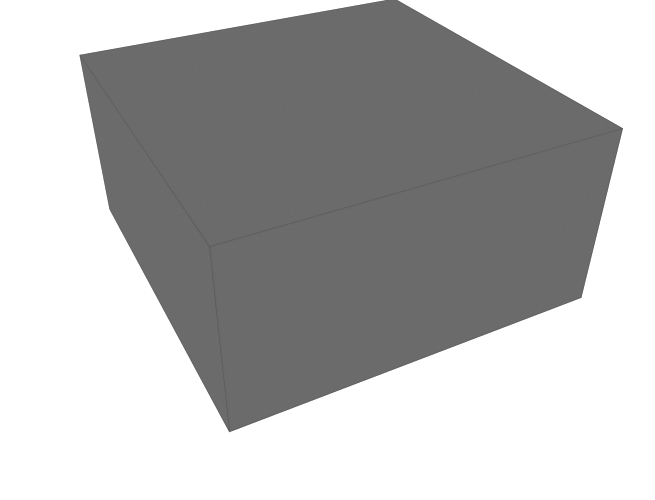
- sionna.rt.scene.box_one_screen#
Example scene containing a metallic box and a screen made of glass
Note: In the figure below, the upper face of the box has been removed for visualization purposes. In the actual scene, the box is closed on all sides.
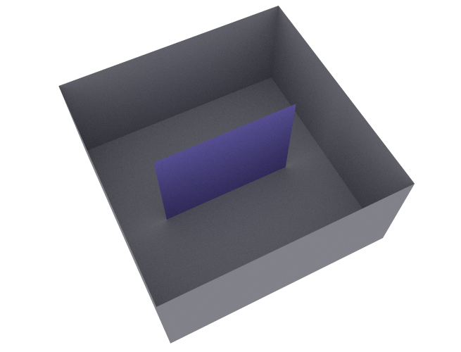
- sionna.rt.scene.box_two_screens#
Example scene containing a metallic box and two screens made of glass
Note: In the figure below, the upper face of the box has been removed for visualization purposes. In the actual scene, the box is closed on all sides.
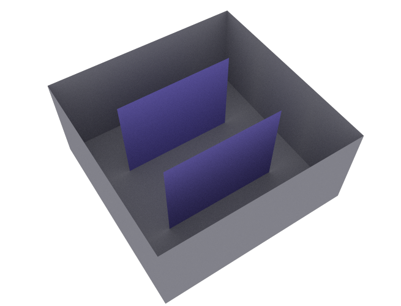
- sionna.rt.scene.double_reflector#
Example scene containing two metallic squares
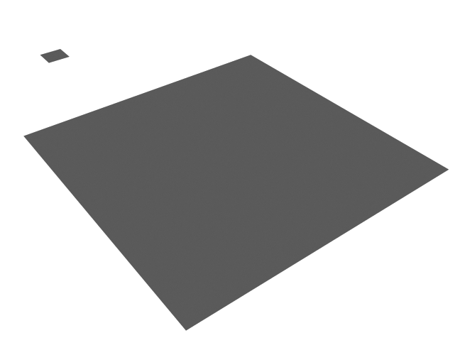
- sionna.rt.scene.etoile#
Example scene containing the area around the Arc de Triomphe in Paris The scene was created with data downloaded from OpenStreetMap and the help of Blender and the Blender-OSM and Mitsuba Blender add-ons. The data is licensed under the Open Data Commons Open Database License (ODbL).
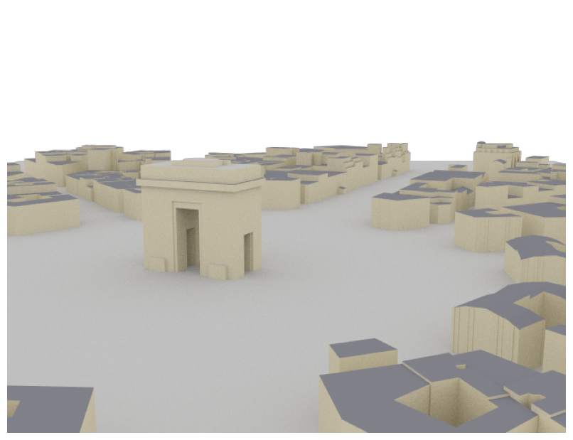
- sionna.rt.scene.floor_wall#
Example scene containing a ground plane and a vertical wall
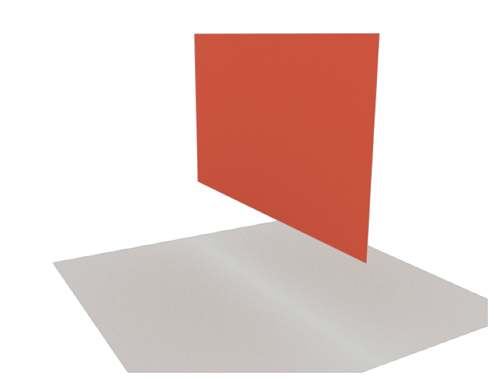
- sionna.rt.scene.florence#
Example scene containing the area around the Florence Cathedral in Florence The scene was created with data downloaded from OpenStreetMap and the help of Blender and the Blender-OSM and Mitsuba Blender add-ons. The data is licensed under the Open Data Commons Open Database License (ODbL).
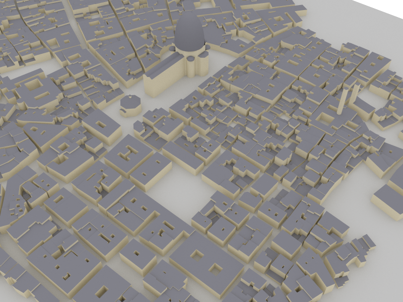
- sionna.rt.scene.munich#
Example scene containing the area around the Frauenkirche in Munich The scene was created with data downloaded from OpenStreetMap and the help of Blender and the Blender-OSM and Mitsuba Blender add-ons. The data is licensed under the Open Data Commons Open Database License (ODbL).
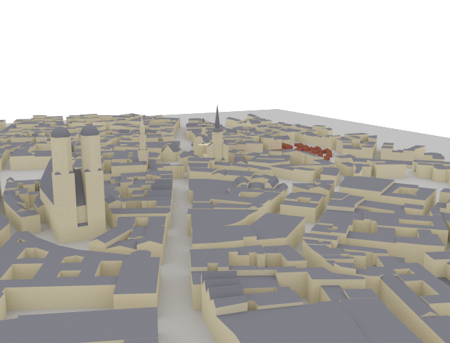
- sionna.rt.scene.san_francisco#
Example scene containing a portion of San Francisco. The scene was created with data downloaded from OpenStreetMap and the help of Blender and the Blender-OSM and Mitsuba Blender add-ons. The data is licensed under the Open Data Commons Open Database License (ODbL).
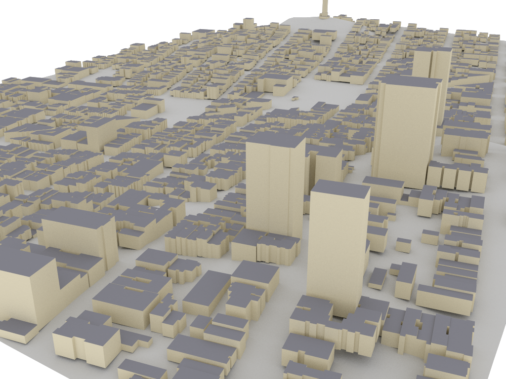
- sionna.rt.scene.simple_reflector#
Example scene containing a metallic reflector
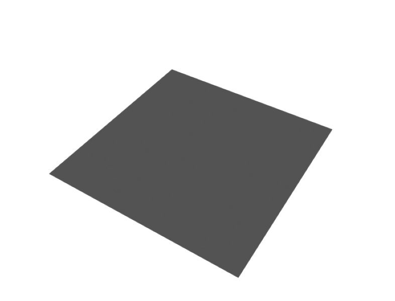
- sionna.rt.scene.simple_street_canyon#
Example scene containing a few rectangular building blocks and a ground plane
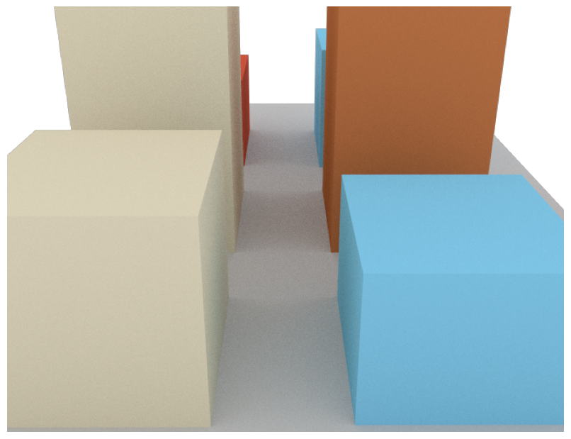
- sionna.rt.scene.simple_street_canyon_with_cars#
Example scene containing a few rectangular building blocks and a ground plane as well as some cars
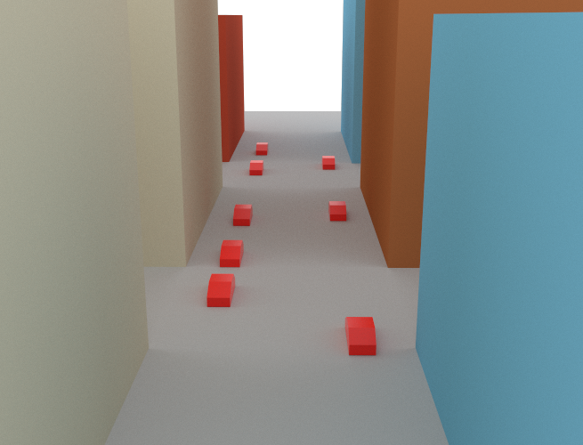
- sionna.rt.scene.simple_wedge#
Example scene containing a wedge with a \(90^{\circ}\) opening angle
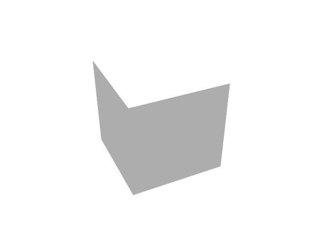
- sionna.rt.scene.triple_reflector#
Example scene containing three metallic rectangles
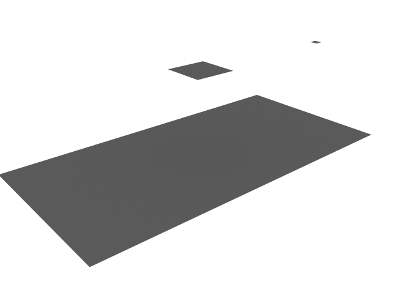
Built-in meshes#
- sionna.rt.scene.low_poly_car#
Simple mesh of a car
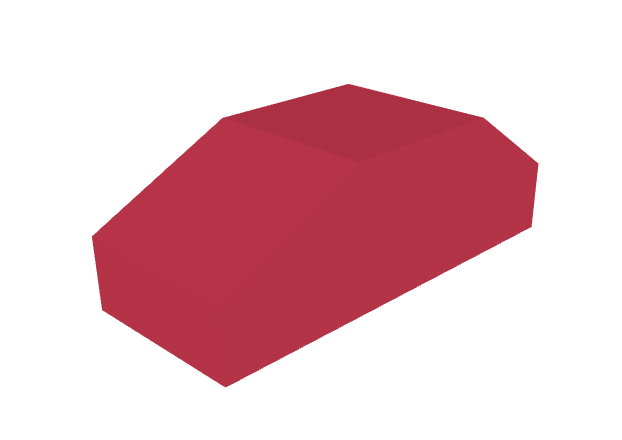
{kind=link}
- sionna.rt.scene.sphere#
Mesh of a sphere
{kind=link}